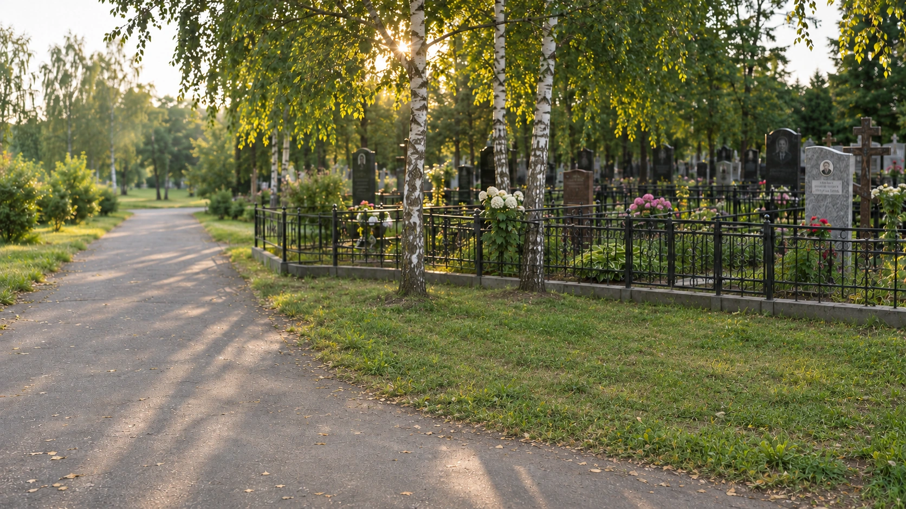
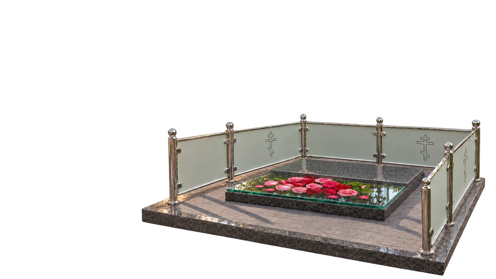
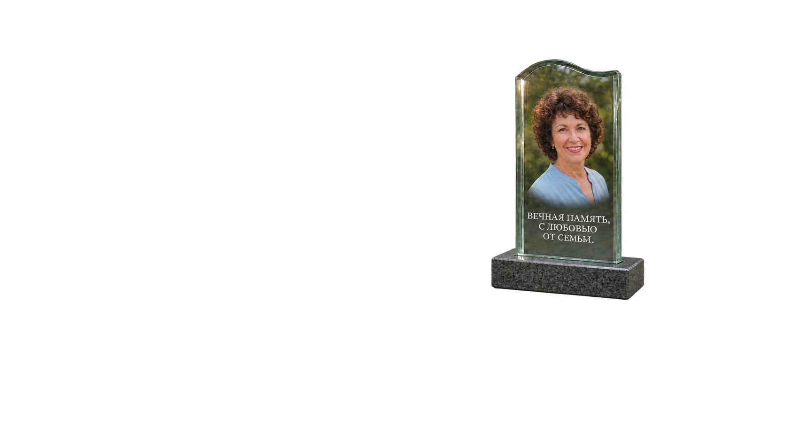
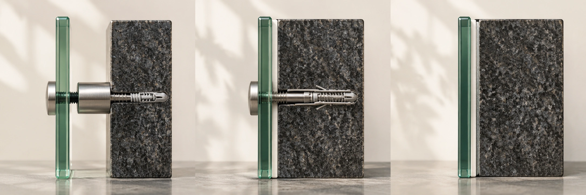
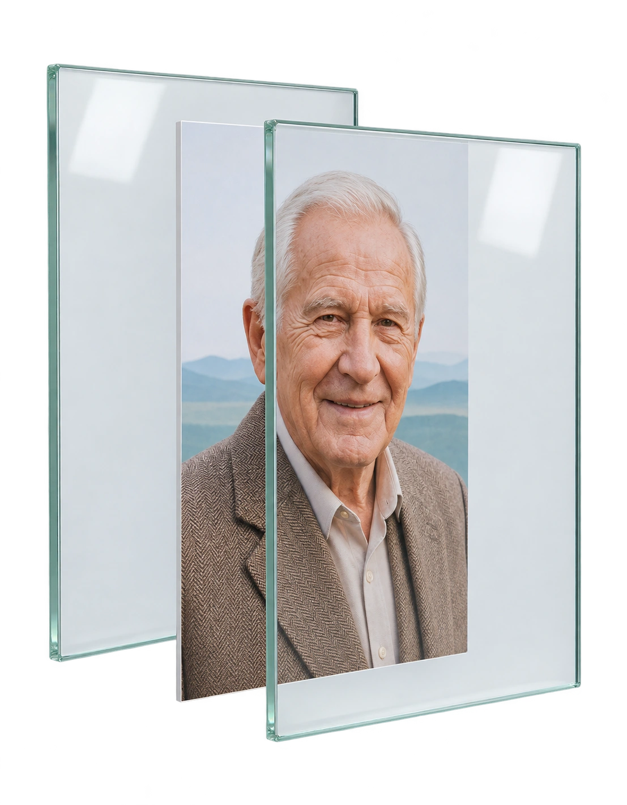
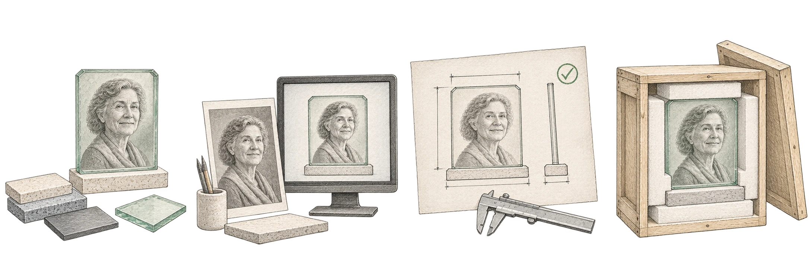
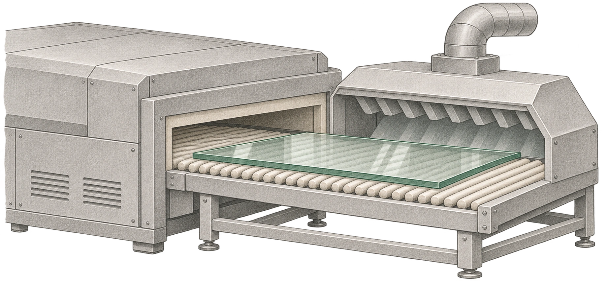
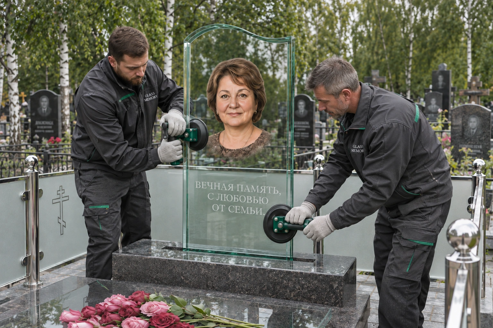

GLASS-MEMORY · ПАМЯТНИКИ И ПОРТРЕТЫ
Светлая память. В стекле.
Подберём памятник из стекла, портрет или цветник с керамической печатью. Согласуем форму, изображение и крепление.
Керамическая печать
Используем стойкие керамические чернила.
Стекло под задачу
Подбираем конструкцию под изделие.
Форма на выбор
Выполним прямоугольник, овал, арку или ваш контур.
Двусторонняя печать
Оформим изделие с двух сторон.
01 / ВЫБЕРИТЕ, С ЧЕГО НАЧАТЬ
Выберите изделие и оформление.
Композиция в одном стиле
Сочетаем памятник, стеклянный цветник и ограждение по форме, цвету и рисунку.
Посмотреть готовые решения →
02 / ВАРИАНТЫ ПАМЯТНИКОВ
Памятники и стелы
Поможем выбрать триплекс, наборное стекло или сталь и подобрать форму памятника.
Портрет в металлической раме
Обрамляем стеклянный портрет рамой из профильной трубы.
Наборное стекло
Соединяем отдельные стеклянные элементы УФ-клеем.
Фигурный триплекс
Сочетаем стелу из многослойного стекла с камнем.
Металл с лазерной резкой
Подберём простой контур для стелы из листа стали 5 мм со стеклянным портретом.
03 / ГОТОВЫЕ РЕШЕНИЯ
Памятник и оформление. В едином стиле.
Подберём к памятнику стеклянный цветник и ограждение. Согласуем каждый элемент и общий рисунок.
Стекло и камень
Сочетаем фигурную стелу, каменное основание и стеклянную накладку на цветник.
Комплекс с остеклением
Объединим стелу, цветник и ограждение в одну композицию.
04 / СТЕКЛЯННЫЕ ЦВЕТНИКИ
Стеклянные цветники. Под ваш участок.
Стеклянная накладка на цветник
Нанесём керамический рисунок по всей площади стекла. Форму накладки подберём под размеры и контур цветника.
Закалённое стекло и стойкий цвет
Закрепим закалённое стекло через отверстия или на клей по периметру. Для ухода достаточно убрать мусор и протереть поверхность.
Подобрать цветник05 / ОГРАЖДЕНИЯ
Подберём ограждение из стекла или стали.
Стеклянные ограждения
Предложим закалённое стекло на столбиках из нержавеющей стали или гранита. Оформим цветной или белой печатью либо пескоструйным рисунком.
Металлические ограждения
Подберём стальную оградку с лазерной резкой по профильной трубе или листу. Согласуем размеры и рисунок под ваш участок.
Подобрать ограждение06 / КЕРАМИЧЕСКАЯ ПЕЧАТЬ
Печатаем портреты на стекле.
Сохраняем цвет портрета
Используем керамическую печать: цвет сохраняется 20+ лет, изображение устойчиво к погодным условиям и царапинам.
Закрываем фон камня
Наносим белую подложку за портретом. Она отделяет изображение от камня и делает цвета насыщеннее.
Подбираем форму
Предложим отдельный портрет или стелу из цельного стекла либо триплекса. При необходимости оформим обе стороны.
Обжигаем при 600 °C
Используем керамические чернила. При обжиге 600 °C они спекаются со стеклом, и изображение становится частью поверхности.
07 / КРЕПЛЕНИЕ К ПАМЯТНИКУ
Подберём крепление к вашему памятнику.
Учтём конструкцию памятника, толщину стекла и то, как портрет должен смотреться на камне.

01
На расстоянии от камня
Установим стекло на дистанционный крепёж с отступом 15 мм от камня.
02
Вплотную к камню
Закрепим стекло вплотную к памятнику. Белой подложкой закроем фон камня.
03
На клей-герметик
Закрепим стекло без сверления, на клей-герметик. Используем белую подложку; состав подберём под основание.
08 / РАМЫ И ПОДСТАВКИ
Подберём опору для вашего портрета.
Стеклянная подставка
Подберём стеклянную опору по размеру портрета и способу установки.
Металлическая подставка
Предложим подставку из стали с порошковой окраской или матовой нержавеющей стали. Толщина металла — 4 мм, стекла — 8–13 мм.
Согласуем опору и крепление
Подберём подставку или раму под размеры портрета и место установки.
Подобрать подставку
09 / КОНСТРУКЦИЯ СТЕКЛА

Триплекс — многослойное стекло.
Для стел используем триплекс: два или более слоя стекла соединены полимерной плёнкой. Она удерживает осколки при разрушении. Портрет наносим керамической печатью; от фона его отделяет белая подложка.
Наборное стекло соединяем УФ-клеем
Для наборных памятников используем незакалённое стекло. Соединяем отдельные элементы УФ-клеем, без полимерной плёнки. Конструкцию и крепление подбираем под изделие.
10 / ОТ ИДЕИ К ИЗДЕЛИЮ
Начнём с вашей идеи. Детали согласуем вместе.

01
Выбор
Поможем выбрать изделие, форму и размеры. Готовый эскиз не нужен.
02
Оформление
Подберём изображение, стекло, подложку и крепление.
03
Согласование
Согласуем макет, состав заказа, стоимость и срок изготовления.

04
Изготовление
Изготовим изделие по утверждённому макету и проверим качество.
05
Получение
Отдельно согласуем упаковку, перевозку и монтаж.
Срок изготовления согласуем до заказа. Он зависит от изделия, состава композиции и сложности оформления.
11 / ПЕРЕД ВЫБОРОМ
О стекле, цене и заказе.

Установка в паз каменного основания
Можно сохранить существующий памятник?
Да, подберём стеклянную накладку с новым портретом. Сначала оценим состояние камня и выберем крепление. Для печати понадобится цифровое изображение.
От чего зависит стоимость?
Рассчитаем стоимость по форме, размерам, стеклу, печати и креплению. Перевозку и монтаж согласуем отдельно.
Как долго сохраняется цвет?
Печатаем керамическими чернилами: изображение сохраняет цвет 20+ лет. Срок и условия гарантии согласуем при оформлении заказа.
Нужно ли сразу присылать портрет?
Нет, сначала обсудим изделие и оформление. Фотографию попросим, когда начнём готовить портрет к печати.
12 / ВАШЕ РЕШЕНИЕ
Обсудим ваше изделие.
Подберём форму, изображение и крепление. Фото и размеры вы сможете добавить позже.
ВАШ ЗАПРОС
Запрос подготовлен.
Проверьте детали и сохраните запрос, чтобы передать его при обращении.
Данные не отправлены. Запрос хранится только на этой странице.